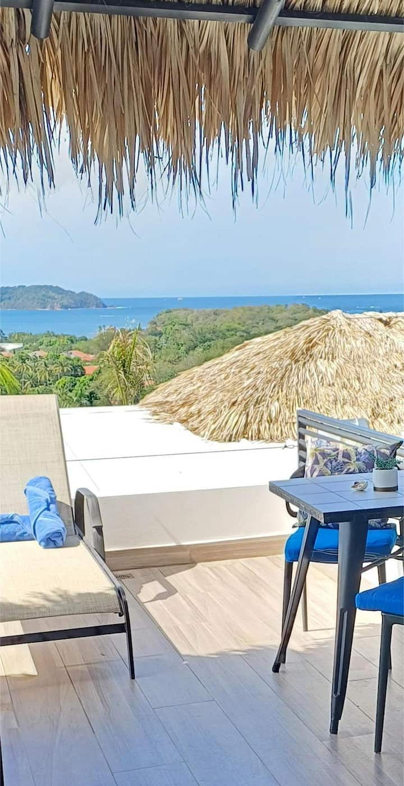

Stop 1 • Mon Nov 16 – Wed Nov 18 (2N)
✓ Booked on Airbnb
Playa Potrero / Playa Penca Hills
Lux. Romantic Cocoon: Sea View & Private Pool
$277.74
Paid (Airbnb)
Independent cliffside couples' suite with a private plunge pool (2m × 1.3m), king bed, kitchenette, and panoramic sunset views over Potrero & Flamingo Bay. 5 mins to Playa Penca & Playa Potrero, 15 mins to Las Catalinas.
🏷️ Status: Confirmed & Paid on Airbnb (15% host discount applied, $0 cleaning fee)
🚗 Drive from LIR Airport: ~1 hr 15 min (52 km) via paved Route 21 & Route 911
🔑 Check-In Rule: On-site hosts perform key handover in person and send gate/beach maps before arrival.